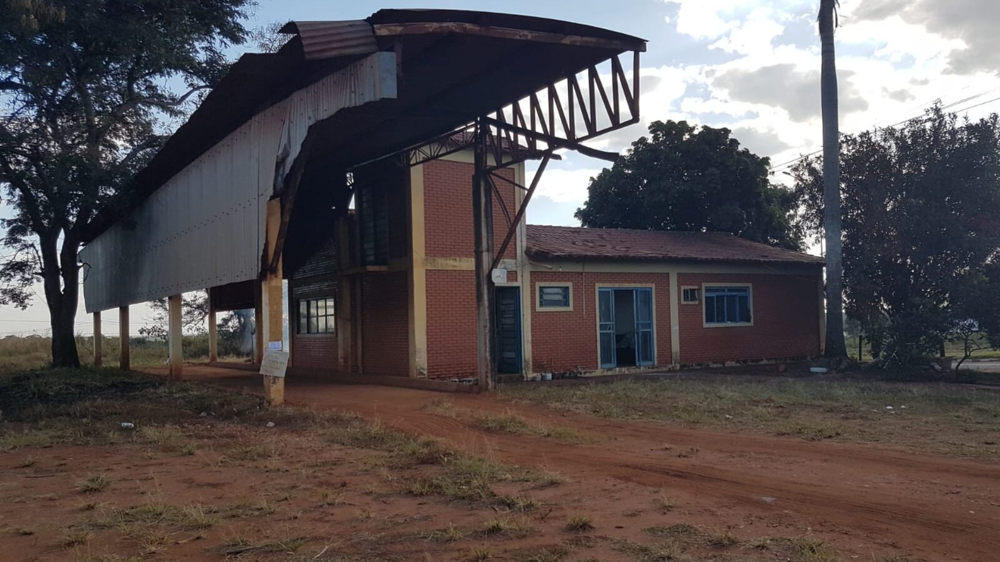

Armazenagem
Estruturas industriais destinadas às operações de armazenagem e movimentação de produtos agrícolas.
Estrutura agroindustrial posicionada em uma região de forte circulação agrícola e conexão com importantes corredores produtivos de Goiás e do Triângulo Mineiro.
A Paranagel é apresentada como uma oportunidade para grupos que avaliam expansão em armazenagem, logística, agroindústria ou ativos operacionais ligados ao agronegócio.
Estruturas industriais destinadas às operações de armazenagem e movimentação de produtos agrícolas.
Posicionamento regional com acesso aos corredores que conectam Paranaiguara, São Simão, Rio Verde, Jataí e Uberlândia.
Ativo adequado para análise por operadores, grupos agroindustriais, investidores e empresas com estratégia de expansão.

A avaliação comercial deve considerar a infraestrutura existente, a localização, os acessos, o potencial de uso e a estratégia do comprador.
Fotografias reais do ativo disponíveis no material comercial.
Região conectada aos mercados agrícolas do sudoeste goiano e ao eixo São Simão–Quirinópolis–Rio Verde, além da ligação com o Triângulo Mineiro.
Consulte o material comercial e avance para uma conversa reservada sobre condições, documentação e processo de aquisição.
O valor comercial de referência apresentado é de R$ 30 milhões, sujeito a negociação e às condições da operação.
Sim. O dossiê comercial pode ser consultado nesta página. Documentos adicionais devem ser disponibilizados conforme o avanço da análise e da negociação.
O ativo pode ser analisado por operadores de armazenagem, empresas agroindustriais, investidores estratégicos, empresas de logística e outros grupos compatíveis com seu perfil operacional.